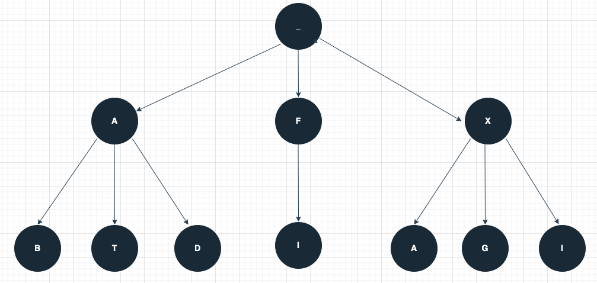

This week’s section exercises will also focus on Huffman Trees! Remember that every week we will also be releasing a Qt Creator project containing starter code and testing infrastructure for that week's section problems. When a problem name is followed by the name of a .cpp file, that means you can practice writing the code for that problem in the named file of the Qt Creator project. Here is the zip of the section starter code:
üì¶ Starter project
For all the problems in this handout, assume the following structures have been declared:
struct TreeNode {
int data;
TreeNode *left;
TreeNode *right;
// default constructor does not initialize
TreeNode() {}
// 3-arg constructor sets fields from arguments
TreeNode(int d, TreeNode* l, TreeNode* r) {
data = d;
left = l;
right = r;
}
};
struct TernaryTreeNode {
char ch;
TernaryTreeNode *left;
TernaryTreeNode *middle;
TernaryTreeNode *right;
TernaryTreeNode() {}
TernaryTreeNode(char c) {
ch = c;
left = middle = right = nullptr;
}
TernaryTreeNode(char c, TernaryTreeNode* l, TernaryTreeNode* m, TernaryTreeNode* r) {
ch = c;
left = l;
middle = m;
right = r;
}
bool isLeaf() {
return left == nullptr && middle == nullptr && right == nullptr;
}
};
struct ListNode {
int value;
ListNode* next;
}
1) Decode Text (ternary.cpp)
We will be using the ternary tree definition above in this problem. A ternary tree is a tree where each node in the tree has at most 3 child nodes (left, middle and right). Each node in this tree, except the root, stores a character. Given a pointer to a ternary tree node and a string representing a sequence of directions , write a function
string decodeText(TernaryTreeNode* root, string sequence)
that returns the string obtained by following the directions in the sequence. For example, in the tree below, a sequence like "RM" gives us the string "XG". As another example, a sequence like "LMR" gives us the string "AT". Notice that, in second example, we can't move right because the middle node with T has no right child. In such cases, you should stop processing the remaining directions and return the string you built so far. You can assume the sequence will always contain valid directions (ie L, M, R) and that you will get a non-empty ternary tree.

A few things to note here as you work on the Huffman Assignment. You can adapt this solution to the solution to decodeText of your Huffman assignment! Note that this tree and encoding structure is different from the Huffman Tree. First, in the Huffman Tree, the characters are only at the leaf nodes. Second, when decoding the text with a huffman tree, you don't stop when you hit a leaf; you will need to explore all remaining encoded bits.
string decodeSequence(TernaryTreeNode* tree, string sequence) {
string message;
for (char direction : sequence) {
if (direction == 'L') {
tree = tree->left;
} else if (direction == 'M') {
tree = tree->middle;
} else {
tree = tree->right;
}
if (!tree) {
break;
}
message += tree->ch;
}
return message;
}
2) Print All Paths (ternary.cpp)
We will use the same ternary definition above. Now, write a function
void printAllPaths(TernaryTreeNode* root)
that prints all the valid paths to the leaves in the ternary tree. For example, in the ternary above, your function should print "LL", "LM", "LR", "MM", "RL", "RM", "RR". The order of your output doesn't matter.
void printAllPaths(TernaryTreeNode* tree, string soFar) {
if (!tree) {
return;
}
if (tree->isLeaf()) {
cout << soFar << endl;
return;
}
printAllPaths(tree->left, soFar + "L");
printAllPaths(tree->middle, soFar + "M");
printAllPaths(tree->right, soFar + "R");
}
void printAllPaths(TernaryTreeNode* tree) {
printAllPaths(tree, "");
}
3) Trees (trees.cpp)
A binary tree (not necessarily a binary search tree) is called a palindromic tree if it’s its own mirror image. For example, the tree on the left is a palindromic tree, but the tree on the right is not:
![This image depicts two different trees. The tree on the left has the following structure. The root node has value 3 and has a left subtree with root node 2 and a right subtree with root node 2. The node 2 on the left has a left child 5, which is a leaf, and a right subtree whose root is 4. The node 4 has left child 1 and right child 2, both of whom are leaves. The node 2 on the left a right subtree whose root is 4 and a right child 5, which is a leaf. The node 4 has left child 2 and right child 1, both of whom are leaves. The tree on the right has the following structure. The root of the tree is 3 and it has two subtrees, which are identical to one another. The structure of the subtrees is root node 1, with left child 1 and right child 2, both of whom are leaves.](img/mirror.png)
Write a function
bool isPalindromicTree(TreeNode* root)
that takes in a pointer to the root of a binary tree and returns whether it’s a palindrome tree.
To solve this problem, we’ll solve a slightly more general problem: given two trees, are they mirrors of one another? We can then check if a tree is a palindrome by seeing whether that tree is a mirror of itself.
bool isPalindromicTree(TreeNode* root) {
return areMirrors(root, root);
}
bool areMirrors(TreeNode* root1, TreeNode* root2) {
/* If either tree is empty, both must be. */
if (root1 == nullptr || root2 == nullptr) {
return root1 == root2;
}
/* Neither tree is empty. The roots must have equal values. */
if (root1->data != root2->data) {
return false;
}
/* To see if they're mirrors, we need to check whether the left subtree of
* the first tree mirrors the right subtree of the second tree and vice-versa.
*/
return areMirrors(root1->left, root2->right) &&
areMirrors(root1->right, root2->left);
}